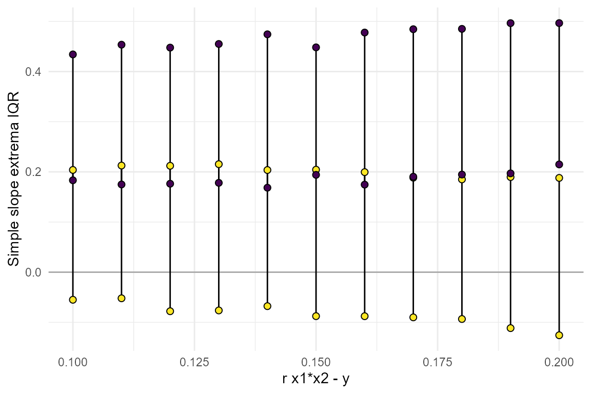
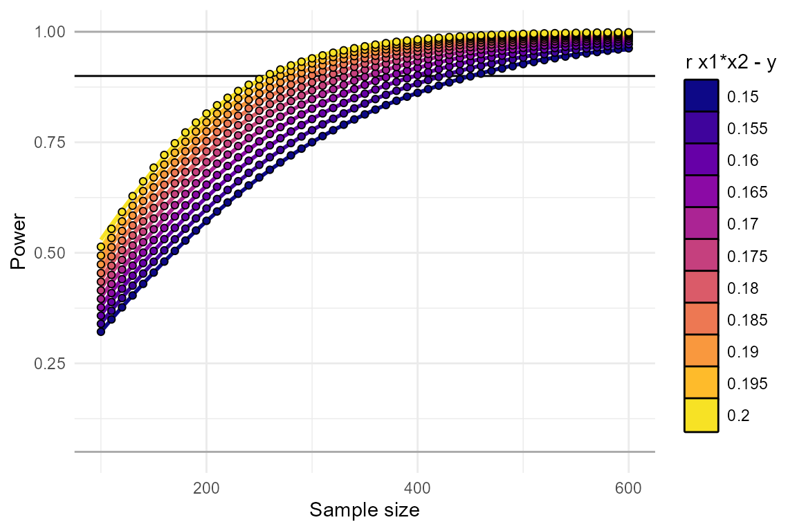
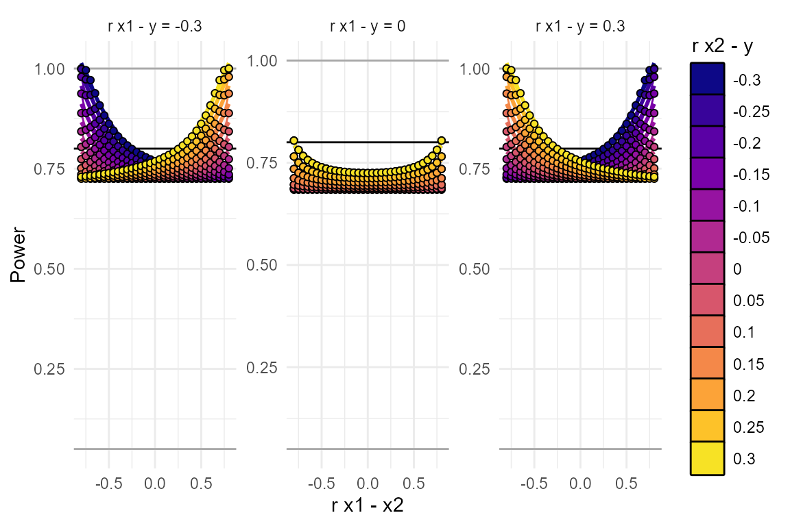

The InteractionPoweR Package
David AA Baranger
Source:vignettes/articles/InteractionPoweRvignette.Rmd
InteractionPoweRvignette.RmdThis vignette describes the basics of interaction analyses and how to use this package. A more updated version of our discussion of many of the topics listed here can be found in our tutorial paper (open access), which can be found at: https://journals.sagepub.com/doi/full/10.1177/25152459231187531
Introduction
Interaction analyses take the form:
\[ Y \sim \beta_0 + X_1\beta_1 + X_2\beta_2 + X_1X_2\beta_3 + \epsilon \]
Where \(Y\) is the dependent variable, \(X_1\) and \(X_2\) are our independent variables, and our interaction term is \(X_1X_2\). The \(\beta\)s in this equation are our regression coefficients and \(\epsilon\) is our error. Note that in this equation, and throughout the code in this package, we refer to the two interacting variables as \(X_1\) and \(X_2\), as opposed to \(X\) and \(Z\), or \(X\) and \(M\). This is to emphasize that, as far as these simulations are concerned, \(X_1\) and \(X_2\) are interchangeable, and any conclusions about causality (i.e. “moderation”) will rely on the specifics of the variables.
The goal of the power analyses supported by this package is to
determine how much power an analysis has to detect whether \(\beta_3\) (the interaction term regression
coefficient) is different from 0 at some pre-specified \(\alpha\) value (alpha, or
p-value). \(\alpha\) refers to our
false positive rate, which is how frequently we will accept
that our analysis has incorrectly rejected the null hypothesis.
Power, refers to our true positive rate, how
frequently do we want to correctly accept the alternative hypothesis? It
may be easier to think about the inverse of power, the false
negative rate: how frequently will we incorrectly accept the null
hypothesis? A “typical” (though not necessarily recommended) value for
power is 0.8, which means that 20%, or \(1/5\), of the time, the analysis will
incorrectly conclude that there is no effect when there
actually is one. (We recommend striving for at least a power of .9)
Effect sizes
Any simulation in this package requires at minimum 5 input variables:
-
N: the sample size. -
r.x1.y: the Pearson’s correlation (\(r\)) between \(X_1\) and \(Y\) -
r.x2.y: the Pearson’s correlation (\(r\)) between \(X_2\) and \(Y\) -
r.x1.x2: the Pearson’s correlation (\(r\)) between \(X_1\) and \(X_2\) -
r.x1x2.y: the Pearson’s correlation (\(r\)) between \(X_1X_2\) and \(Y\) - this is the interaction effect
It is important to emphasize here that inputs 2-5 are the
population-level Pearson’s correlation between each pair of
variables. This is true even if any or all of the variables in the
simulation are binary. These correlations are used to derive the
regression coefficients via path tracing rules. Also note that these
effect sizes are the cross-sectional correlation. This is in
contrast to how one specifies effects for experimental manipulations,
where the effects are the correlation in each of the experimental
conditions. The Pearson’s correlation is equivalent to the effect size
\(\beta\) (i.e. in the regression \(Y \sim \beta_0 + X\beta + \epsilon\)) when
both \(Y\) and \(X\) are normalized (mean = 0, sd = 1). For
inputs 2-4, we imagine that it will be relatively straightforward for
most users to identify the appropriate values (i.e. by surveying the
literature and identifying large independent studies where the effects
have been reported). However, in the case of the interaction effect
size, r.x1x2.y, users may be less used to thinking about
interaction effects as correlations. The interaction effect size is the
how much the correlation between one of the two independent variables
and the dependent variable changes when conditioned on the
other independent variable. It is both how much \(corr(X_1,Y)\) changes when conditioned on
\(X_2\), and equivalently how much
\(corr(X_2,Y)\) changes when
conditioned on \(X_1\).
A common way of thinking about interaction effect sizes is to plot the data as “simple slopes”. A simple slopes plot shows the correlation between one of the independent variables (e.g. \(X_1\)) and the dependent variable (\(Y\)) in different subsets of the data, where each subset is defined by their value at the second independent variable (e.g. \(X_2\)). For example, we can plot \(Y \sim X_1\) separately in participants with an \(X_2\) value in the lower-half of the distribution and the upper-half of the distribution.
Simulating single data sets
To facilitate user’s understanding of interaction effect sizes,
InteractionPoweR includes functions for simulating single
data sets and plotting the interaction as a simple slopes plot:
The function generate_interaction() simulates a single
data set:
set.seed(2020)
library(InteractionPoweR)
example_data = generate_interaction(N = 350, # sample size
r.x1.y = .2, # correlation between x1 and y
r.x2.y = .1, # correlation between x2 and y
r.x1.x2 = .2, # correlation between x1 and x2
r.x1x2.y = .15 # correlation between x1x2 and y
)The data can then be plotted using the
plot_interaction() function:
plot_interaction(data = example_data, # simulated data
q = 2 # number of simple slopes
)
The function test_interaction() provides easy access to
the results of the interaction regression, the adjusted \(R^2\) of the interaction term, the 95%
confidence interval of the interaction term, the shape of the
interaction (crossover.point = the value of \(X_1\) where the \(X_2\) simple-slopes intersect,
shape = the shape of the interaction, >1 = cross-over, 1
= knock-out, <1 = attenuated), the simple slopes of \(X_2\), and the correlation between the
variables:
test_interaction(data = example_data, # simulated data
q = 2 # number of simple slopes
)## $linear.model
## Estimate Std. Error t value Pr(>|t|)
## x1 0.1888967 0.05153863 3.665148 2.859696e-04
## x2 0.1356407 0.05165265 2.626016 9.022851e-03
## x1x2 0.2129386 0.05001033 4.257892 2.661829e-05A simple power analysis
The simplest power analysis we can run is one in which all the
parameters are already known. All the correlations are known, the sample
size is known, and the interaction effect size is known. We additionally
specify alpha, which is the p-value we’re using (0.05 is
default). We can compute power analytically using the
power_interaction_r2() function.
power_interaction_r2(
alpha = 0.05, # p-value
N = 350, # sample size
r.x1.y = .2, # correlation between x1 and y
r.x2.y = .1, # correlation between x2 and y
r.x1.x2 = .2, # correlation between x1 and x2
r.x1x2.y = .15) # correlation between x1x2 and y## pwr
## 1 0.8131373We find that our analysis has 80% power (pwr), and the
interaction has a shape of 0.75 (the interaction effect
x1x2 is 75% of the magnitude of x1 - the
interaction is an attenuated effect where the simple-slope lines are all
in the same direction).
We can also use the function power_interaction to
compute power via monte-carlo simulation. Additional parameters include
n.iter, which is the number of simulations run. In this
example we’ll use just 1,000 simulations, but we recommend using 10,000
for more stable results.
set.seed(290115)
power_interaction(n.iter = 1000, # number of simulations
alpha = 0.05, # p-value
N = 350, # sample size
r.x1.y = .2, # correlation between x1 and y
r.x2.y = .1, # correlation between x2 and y
r.x1.x2 = .2, # correlation between x1 and x2
r.x1x2.y = .15) # correlation between x1x2 and y## Warning: executing %dopar% sequentially: no parallel backend registered## N pwr
## 1 350 0.805We find that our analysis has 80% power (pwr).
Exploring the parameter space
Typically not all variables are known in a power analysis. For
example, we know the magnitude of the interaction effect we’re
interested in, and we want to learn what sample size would be needed to
detect that effect with 90% power. Or we have a sample already, and we
want to learn what is the smallest effect we can detect with 90% power.
To answer these questions, the user simply needs to provide the range of
parameters that they would like the analysis to use. Almost any of the
input parameters can be ranges, and the power_interaction
runs n.iter simulations for every combination of input
parameters.
As the number of input parameters increase, so too does the total
number of simulations. To reduce the amount of time an analysis takes,
power_interaction() supports running simulations in
parallel. The number of cores to be used for the parallel simulation is
indicated by the cl flag (we recommend a number between 4 -
6 on most personal computers).
Finding the optimal sample size
For example, to explore multiple sample sizes we can set
N = seq(200,600,by = 50), which runs a simulation for N =
200, 250, 300 etc, up to N=500. Equivalently, we could also set
N = c(200,250,300,350,400,450,500,550,600), but the former
is faster to write.
power_test = power_interaction_r2(
alpha = 0.05, # p-value
N = seq(200,600,by = 10), # sample size
r.x1.y = .2, # correlation between x1 and y
r.x2.y = .1, # correlation between x2 and y
r.x1.x2 = .2, # correlation between x1 and x2
r.x1x2.y = .15) # correlation between x1x2 and y
power_test## N pwr
## 1 200 0.5724275
## 2 210 0.5935829
## 3 220 0.6139697
## 4 230 0.6335895
## 5 240 0.6524470
## 6 250 0.6705498
## 7 260 0.6879081
## 8 270 0.7045340
## 9 280 0.7204417
## 10 290 0.7356468
## 11 300 0.7501662
## 12 310 0.7640182
## 13 320 0.7772214
## 14 330 0.7897955
## 15 340 0.8017607
## 16 350 0.8131373
## 17 360 0.8239461
## 18 370 0.8342077
## 19 380 0.8439429
## 20 390 0.8531723
## 21 400 0.8619163
## 22 410 0.8701952
## 23 420 0.8780286
## 24 430 0.8854362
## 25 440 0.8924369
## 26 450 0.8990493
## 27 460 0.9052915
## 28 470 0.9111809
## 29 480 0.9167346
## 30 490 0.9219691
## 31 500 0.9269002
## 32 510 0.9315434
## 33 520 0.9359132
## 34 530 0.9400240
## 35 540 0.9438894
## 36 550 0.9475223
## 37 560 0.9509354
## 38 570 0.9541406
## 39 580 0.9571493
## 40 590 0.9599725
## 41 600 0.9626206We can plot these results using the function
plot_power_curve():
plot_power_curve(power_data = power_test, # output from power_interaction()
power_target = .9, # the power we want to achieve
x = "N" # x variable
)
By eye-balling this plot, we can see that N=450 yields approximately 90% power, and N=330 yields approximately 80% power. Since it is so fast to compute analytic power, we can re-run the analysis over a restricted range to get the exact N.
power_test = power_interaction_r2(
alpha = 0.05, # p-value
N = seq(450,470,by = 1), # sample size
r.x1.y = .2, # correlation between x1 and y
r.x2.y = .1, # correlation between x2 and y
r.x1.x2 = .2, # correlation between x1 and x2
r.x1x2.y = .15) # correlation between x1x2 and y
power_test## N pwr
## 1 450 0.8990493
## 2 451 0.8996899
## 3 452 0.9003268
## 4 453 0.9009600
## 5 454 0.9015896
## 6 455 0.9022156
## 7 456 0.9028379
## 8 457 0.9034566
## 9 458 0.9040718
## 10 459 0.9046834
## 11 460 0.9052915
## 12 461 0.9058960
## 13 462 0.9064970
## 14 463 0.9070945
## 15 464 0.9076886
## 16 465 0.9082792
## 17 466 0.9088663
## 18 467 0.9094501
## 19 468 0.9100304
## 20 469 0.9106073
## 21 470 0.9111809We achieve 90% power with N=460.
In the case where we are using simulations, running a lot of
simulations is computationally quite expensive. The function
power_estimate() can thus be used to obtain a more precise
answer when we haven’t sampled the parameter space as densely. This
function fits a regression model to the power results to estimate when a
specific power will be achieved.
power_test = power_interaction_r2(
alpha = 0.05, # p-value
N = seq(200,600,by = 50), # sample size
r.x1.y = .2, # correlation between x1 and y
r.x2.y = .1, # correlation between x2 and y
r.x1.x2 = .2, # correlation between x1 and x2
r.x1x2.y = .15) # correlation between x1x2 and y
power_estimate(power_data = power_test, # output from power_interaction()
x = "N", # the variable we want a precise number for
power_target = 0.9 # the power we want to achieve
)## [1] 445.3621With only 9 samples of the parameter space, we can estimate that we nee N=453 to achieve 90% power, which isn’t that far off.
Finding the smallest detectable effect size
Another common use-case is when the sample size and
variables-of-interest are known, and we want to know how small of an
interaction effect can be detected at a certain power level. We can
repeat the same steps as above, except this time r.x1x2.y
will be a range of values.
power_test = power_interaction_r2(
alpha = 0.05, # p-value
N = 350 , # sample size
r.x1.y = .2, # correlation between x1 and y
r.x2.y = .1, # correlation between x2 and y
r.x1.x2 = .2, # correlation between x1 and x2
r.x1x2.y = seq(.1,.2,by=.005)) # correlation between x1x2 and y
power_test## r.x1x2.y pwr
## 1 0.100 0.4760123
## 2 0.105 0.5138689
## 3 0.110 0.5516069
## 4 0.115 0.5888872
## 5 0.120 0.6253837
## 6 0.125 0.6607914
## 7 0.130 0.6948340
## 8 0.135 0.7272701
## 9 0.140 0.7578978
## 10 0.145 0.7865584
## 11 0.150 0.8131373
## 12 0.155 0.8375646
## 13 0.160 0.8598129
## 14 0.165 0.8798947
## 15 0.170 0.8978583
## 16 0.175 0.9137828
## 17 0.180 0.9277732
## 18 0.185 0.9399539
## 19 0.190 0.9504639
## 20 0.195 0.9594509
## 21 0.200 0.9670667
plot_power_curve(power_data = power_test, # output from power_interaction()
power_target = .9 # the power we want to achieve
)
We see that we have approximately 90% power to detect effects as
small as r.x1x2.y = 0.1725.
In some cases it may also be useful to take a look the distribution
of simple slopes across the range of parameters tested. If we run our
analysis as a simulation and use detailed_results=T, we can
look at the distribution of effect sizes and simple slopes.
set.seed(316834)
power_test = power_interaction(n.iter = 1000, # number of simulations
alpha = 0.05, # p-value
N = 350 , # sample size
r.x1.y = .2, # correlation between x1 and y
r.x2.y = .1, # correlation between x2 and y
r.x1.x2 = .2, # correlation between x1 and x2
r.x1x2.y = seq(.1,.2,by=.01), # correlation between x1x2 and y
cl = 2, # number of clusters for parallel analyses
detailed_results = T # detailed results
)## Performing 11000 simulations
plot_simple_slope(power_data = power_test)
From this we can learn that the range of slopes that would be
consistent with the smallest effect we are powered to detect,
r.x1x2.y=0.17, is quite large. In particular, note that the
lower slope could be negative, 0, or even fairly large in the positive
direction - all consistent with r.x1x2.y=0.17. See the
section below on Detailed Results for more information
on all the outputs when detailed.results = TRUE.
Varying multiple parameters
It is not uncommon that multiple parameters in the simulation are
unknown. To find the power at every combination of the parameters,
simply input a range of values for every unknown parameter in the
simulation. We generally recommend to only vary up to 3 parameters at a
time, any more and it can be difficult to parse the results (and
simulations can take a very long time to run). For example,
lets say there’s a range of plausible effect sizes for the interaction,
and we want to know how large of a sample we would need to detect each
of them. To test this, we can vary both N and
r.x1x2.y:
power_test = power_interaction_r2(
alpha = 0.05, # p-value
N = seq(100,600,by = 10), # sample size
r.x1.y = .2, # correlation between x1 and y
r.x2.y = .1, # correlation between x2 and y
r.x1.x2 = .2 , # correlation between x1 and x2
r.x1x2.y = seq(.15,.2,by=.005), # correlation between x1x2 and y
detailed_results = T)
plot_power_curve(power_data = power_test, # output from power_interaction()
power_target = .9, # the power we want to achieve
x = "N", # x-axis
group = "r.x1x2.y" # grouping variable
)
power_estimate(power_data = power_test %>% dplyr::select(c("N","r.x1x2.y","pwr")), # select the variables used for the estimate
x = "N", # the variable we want a precise number for
power_target = 0.9 # the power we want to achieve
)## r.x1x2.y estimate
## 1 0.150 440.7966
## 2 0.155 412.6445
## 3 0.160 387.7582
## 4 0.165 365.0462
## 5 0.170 344.5132
## 6 0.175 325.8309
## 7 0.180 308.7349
## 8 0.185 293.3426
## 9 0.190 278.8560
## 10 0.195 265.4087
## 11 0.200 253.3799From this we’ve learned that, depending on exactly what effect size
we’re aiming for, we’ll need an N between 260 and 450.
Why correlations are important
Users may wonder why this package requires so many effect sizes and
correlations. Here is a simple example, where the magnitude of the
correlation between x1 and x2, as well as
their main effects, jointly influence power, in somewhat surprising
ways.
power_test = power_interaction_r2(
alpha = 0.05, # p-value
N = 600, # sample size
r.x1.y = c(-.3,0,.3), # correlation between x1 and y
r.x2.y = round(seq(-.3,.3,.05),2), # correlation between x2 and y
r.x1.x2 = seq(-.8,.8,.05), # correlation between x1 and x2
r.x1x2.y = .1, # correlation between x1x2 and y
detailed_results = T)
plot_power_curve(power_data = power_test, # output from power_interaction()
power_target = .8, # the power we want to achieve
x = "r.x1.x2",
group = "r.x2.y",
facets = "r.x1.y"
)
Each line shows how power varies depending on the correlation between
x1 and x2. This effect then also depends on
the main effects of x1 and x2. Thus, ignoring
correlations could result in a very inaccurate power calculation.
Reliability
Reliability is an important issue in statistics. Even if effects are
large, if your measurements are unreliable, then you’ll be
under-powered. This is especially true for interactions, as the
reliability of both \(X_1\) and \(X_2\) influence power, as well as the
reliability of \(Y\). In the context of
InteractionPoweR, “reliability” means the proportion of the
variance of each variable that is attributable to true signal, as
opposed to measurement error. A reliability of ‘1’ (the default), means
that your variables were measured with no error (reliability must be
greater than 0, and less than or equal to 1). Common statistics that
reflect reliability include test-retest reliability, inter-rater
reliability, and Cronbach’s alpha. The flags rel.x1,
rel.x2, and rel.y control the reliability of
each simulated variable. We recommend exploring how much reliability
will affect your power. For example:
power_test = power_interaction_r2(
alpha = 0.05, # p-value
N = 450, # sample size
r.x1.y = .2, # correlation between x1 and y
r.x2.y = .1, # correlation between x2 and y
r.x1.x2 = .2, # correlation between x1 and x2
r.x1x2.y = .15, # correlation between x1x2 and y
rel.x1 = seq(.2,1,by=.1), # x1 reliability
rel.x2 = seq(.2,1,by=.1), # x2 reliability
rel.y = seq(.2,1,by=.2)) # y reliability
plot_power_curve(power_data = power_test, # output from power_interaction()
power_target = .9, # the power we want to achieve
x = "rel.x1", # x-axis
group = "rel.x2", # grouping variable
facets= "rel.y" # facets variable
)
These plots make it clear how large of an effect reliability will have on your results. In this simulation, even a reliability of “acceptable” or “good” (reliability = 0.8), is enough to bring our power down, from 0.9 to 0.636!
Binary/ordinal variables
power_interaction_r2() assumes all variables are
continuous, with a normal distribution. power_interaction()
simulates all variables as continuous and normal.
However, variables can be transformed so that they are
binary/ordinal (e.g., 5 discrete levels, though any value under 20 is
possible). Typically, when a continuous and normal variable is
transformed to be binary/ordinal, the correlations between that variable
and all other variables are reduced or altered. Sometimes, it makes
sense for this to happen in the power analysis. For example, say a
variable is continuous in the literature, and the effect sizes in the
power analysis are drawn from prior work with the continuous variable,
but in your analysis you’ve chosen to dichotomize that variable or to
measure that trait with a ordinal scale. In that case, the reduction in
correlations makes sense, because that accurately reflects your data
analysis and what your power will be. On the other hand, say a variable
is binary (at least in the literature), maybe you’re looking at
sex or diagnosis for a disorder. In that case, your input correlations
are the correlations with the binary/ordinal variable, so you
don’t want them to be reduced or altered.
power_interaction() distinguishes between these cases
with the adjust.correlations flag. The default is
adjust.correlations = TRUE. This indicates that the input
correlations are with the binary/ordinal variables. To circumvent the
problem of variable transformations altering correlations,
power_interaction() runs a function to compute how much the
input correlations need to be adjusted so that the final output
variables have the correlation structure specified by the user. When
adjust.correlations = FALSE, this function is not run,
allowing the user to see the impact of variable transformations on the
correlation structure, and on their power.
The flags k.x1, k.x2, and k.y
control the number of discrete values each variable takes (i.e.,
k.x1 =2 means that x1 is a binary variable,
while k.x2 = 5 means that x2 is a
ordinal-variable).
Binary
Here’s a single data set where x1, x2, and y are all binary. Note that when \(Y\) is binary, the analysis is run as a logistic regression.
test_data = generate_interaction(
N = 450, # sample size
r.x1.y = .2, # correlation between x1 and y
r.x2.y = .1, # correlation between x2 and y
r.x1.x2 = .2, # correlation between x1 and x2
r.x1x2.y = .15, # correlation between x1x2 and y
k.x1 = 2, # x1 is binary
k.x2 = 2, # x2 is binary
k.y = 2, # y is binary
adjust.correlations = TRUE) # Adjust correlations?
plot_interaction(data =test_data )
ordinal
Here’s an example showing the effects of artificially discretizing
x1 on power. We see that power is lower when there are
fewer discrete values.
power_test = power_interaction(
n.iter=1000,
N = 450, # sample size
r.x1.y = .2, # correlation between x1 and y
r.x2.y = .1, # correlation between x2 and y
r.x1.x2 = .2, # correlation between x1 and x2
r.x1x2.y = .15, # correlation between x1x2 and y
k.x1 = c(2,3,4,6,8), # x1 has 2-10 discrete values
adjust.correlations = FALSE) # Adjust correlations?
plot_power_curve(power_test,power_target = .9)
Detailed and full results
Beyond power and the range of simple slopes,
power_interaction() and power_interaction_r2()
generate a lot of additional information about the simulations. These
can be optionally returned using detailed_results = TRUE
and full_simulation = TRUE (for
power_interaction() only). By default, both of these flags
are FALSE. detailed_results returns additional
information for each unique setting combination, including the mean
correlation structure between the simulated variables across
niter simulations, and the mean regression coefficients.
full_simulation, as the name suggests, returns the output
of test_interaction() for every single simulated data set
that power_interaction() generates. The output can be quite
large (i.e. if 10,000 simulations are run, it will have 10,000
rows).
Detailed results
Let’s return to our example of examining a range of interaction
effect sizes, except now with detailed_results = TRUE. This
yields a lot more information about what the simulated data looked like,
on average.
power_test = power_interaction(n.iter = 1000, # number of simulations
alpha = 0.05, # p-value
N = seq(50,200,50) , # sample size
r.x1.y = .2, # correlation between x1 and y
r.x2.y = .1, # correlation between x2 and y
r.x1.x2 = .2, # correlation between x1 and x2
r.x1x2.y = .4, # correlation between x1x2 and y
detailed_results = TRUE # return detailed results
)
power_test## N pwr x1_pwr x2_pwr x1x2_est_mean x1x2_r2_mean crossover_mean shape_mean
## 1 50 0.780 0.277 0.079 0.4426144 0.1763593 -0.1539197 3.210472
## 2 100 0.979 0.509 0.100 0.3955305 0.1523973 -0.1629060 2.961055
## 3 150 0.998 0.695 0.135 0.3910607 0.1526577 -0.1656292 3.206382
## 4 200 0.998 0.823 0.155 0.3936075 0.1546993 -0.1607875 2.736218
## shape_q_2.5 shape_q_97.5 crossover_q_2.5 crossover_q_97.5 min.lwr
## 1 -20.6471929 20.103591 -0.8424624 0.4985743 -0.5779247
## 2 0.6913046 11.439831 -0.7250498 0.3597690 -0.4340121
## 3 0.9342058 7.868203 -0.6388662 0.2561451 -0.3734257
## 4 1.0795667 6.020076 -0.5102325 0.1646625 -0.3482832
## min.upr max.lwr max.upr x1x2_95_CI_2.5_mean x1x2_95_CI_97.5_mean
## 1 0.2391543 0.1499189 0.9550447 0.1730314 0.7121974
## 2 0.1677606 0.2346053 0.7952463 0.2112746 0.5797864
## 3 0.1279905 0.2774962 0.7592573 0.2442872 0.5378341
## 4 0.1071991 0.3042969 0.7259304 0.2672668 0.5199481
## x1x2_95_CI_width_mean r_y_x1x2_q_2.5 r_y_x1x2_q_50.0 r_y_x1x2_q_97.5
## 1 0.5391660 0.2404203 0.4415142 0.6305032
## 2 0.3685118 0.2190781 0.4014453 0.5758182
## 3 0.2935468 0.2375604 0.3996108 0.5472230
## 4 0.2526813 0.2658015 0.3986438 0.5217490
## x1_est_mean x2_est_mean r_x1_y_mean r_x2_y_mean r_x1_x2_mean r_y_x1x2_mean
## 1 0.1922320 0.06429109 0.1969611 0.10240447 0.2083746 0.4360222
## 2 0.1877368 0.06183341 0.1938392 0.09652172 0.1993411 0.3960011
## 3 0.1915144 0.06219301 0.2028635 0.10097609 0.1989817 0.3964685
## 4 0.1909169 0.06193294 0.2005727 0.09768533 0.1993219 0.3961706
## r_x1_x1x2_mean r_x2_x1x2_mean
## 1 -1.058919e-02 -0.002177245
## 2 -8.850879e-03 -0.002288713
## 3 7.677160e-06 0.003463617
## 4 -4.323312e-03 -0.003413765What is all this?
The first two columns are our standard output, the setting that was
varied across simulations, and the power. Next we have
x1_pwr1 and x2_pwr. This is the power to
detect an effect of x1 and x2 in the interaction model.
x1x2_est_mean and x1x2_r2_mean are then the
mean effect size (\(B_3\)) and
mean change in the adjusted \(R^2\) (or
pseudo-\(R^2\) when \(Y\) is binary) when the interaction term
\(X_1X_2\) is added to the model.
crossover and shape are the value of \(X_1\) where the \(X_2\) simple slopes intersect, and the
shape of the interaction (\(B_3 /
B_1\)), which reflects whether it is a knock-out, attenuated, or
crossover interaction. We also give the mean upper and lower bounds of
the 95% confidence interval of the shape and crossover.
For example, one interesting insight we can gain here is that even
though n=50 has 76% power in this analysis, the
observed shape will vary widely. The confidence
interval indicates that it is even likely that we will observe
significant effects where the interaction has the opposite
shape from anticipated. In fact, we don’t see 95% of simulations
yielding a shape that is consistent with our hypothesis that
r.x1x2.y > r.x1.y, until N=200, which has
99.99% power!
Next we have min.lwr, min.upr,
max.lwr, and max.upr. These reflect the range
of simple-slopes that were observed in the simulations where the
interaction was significant. By default, the number of simple slopes
(q) is 2 (i.e. a 50/50 split), and \(X_2\) is the variable being conditioned on.
The ranges reflect that the majority of the lower simple slope ranges
from -0.05 to .2, and the upper simple slope ranges from .2 to .45. The
proportion of the simple slopes reflected by these ranges can be
controlled with the IQR flag. The default value for
IQR is 1.5, which means that the output ranges are the
median lower and upper simple slope, +/- 1.5 IQRs (an IQR is the 75th
percentile - 25th percentile). This output is intended to give further
insight into the effect sizes detected by the simulation.
x1x2_95_CI_2.5_mean and
x1x2_95_CI_97.5_mean are the mean lower and upper 95%
confidence intervals of the interaction term, and
x1x2_95_CI_width_mean is the mean width of the confidence
interval. Similarly, r_y_x1x2_q_2.5,
r_y_x1x2_q_50.0, and r_y_x1x2_q_97.5 are
quantiles (2.5%, 50%, and 97.5%) of the correlation between \(Y\) and \(X_1X_2\) when the interaction is
significant.
x1_est_mean and x2_est_mean are the mean
main effects of \(X_1\) and \(X_2\), and pwr_x1 and
pwr_x2 is the power to detect those main effects, in the
context of the full interaction regression.
Full results
full_results can be useful when one wants a better grasp
of what goes into the power analysis. If we return to our first example,
we can see what range of sample-level correlations one can expect to
see, given a population-level correlation:
set.seed(942141)
power_test = power_interaction(n.iter = 1000, # number of simulations
alpha = 0.05, # p-value
N = 350, # sample size
r.x1.y = .2, # correlation between x1 and y
r.x2.y = .1, # correlation between x2 and y
r.x1.x2 = .2, # correlation between x1 and x2
r.x1x2.y = .15, # correlation between x1x2 and y
full_simulation = T, # return the full simulation results
detailed_results = T # get detailed results, including correlations
)
# the standard output:
power_test$results## N pwr x1_pwr x2_pwr x1x2_est_mean x1x2_r2_mean crossover_mean shape_mean
## 1 350 0.808 0.949 0.207 0.1652355 0.02668037 -0.3782685 0.9575423
## shape_q_2.5 shape_q_97.5 crossover_q_2.5 crossover_q_97.5 min.lwr
## 1 0.4320577 1.978912 -1.19942 0.3104526 -0.0780142
## min.upr max.lwr max.upr x1x2_95_CI_2.5_mean x1x2_95_CI_97.5_mean
## 1 0.2031697 0.1853961 0.4726258 0.06420129 0.2662696
## x1x2_95_CI_width_mean r_y_x1x2_q_2.5 r_y_x1x2_q_50.0 r_y_x1x2_q_97.5
## 1 0.2020683 0.09287497 0.1652633 0.258831
## x1_est_mean x2_est_mean r_x1_y_mean r_x2_y_mean r_x1_x2_mean r_y_x1x2_mean
## 1 0.1916138 0.05885155 0.202843 0.09743667 0.2009862 0.1675586
## r_x1_x1x2_mean r_x2_x1x2_mean
## 1 -0.001093734 0.002505613
# range of correlations when the test is significant
quants = c(0,.025,.25,.5,.75,.975,1) #quantiles
power_test$simulation %>%
dplyr::filter(sig_int ==1 ) %>% # only significant results
dplyr::summarise(prob = quants,
qs = stats::quantile(r_y_x1x2,quants))## Warning: Returning more (or less) than 1 row per `summarise()` group was deprecated in
## dplyr 1.1.0.
## ℹ Please use `reframe()` instead.
## ℹ When switching from `summarise()` to `reframe()`, remember that `reframe()`
## always returns an ungrouped data frame and adjust accordingly.
## Call `lifecycle::last_lifecycle_warnings()` to see where this warning was
## generated.## prob qs
## 1 0.000 0.05200316
## 2 0.025 0.09287497
## 3 0.250 0.13391873
## 4 0.500 0.16526331
## 5 0.750 0.19832108
## 6 0.975 0.25883097
## 7 1.000 0.30228835When \(B_3\) is significant
(sig_int == 1), 95% of the observed sample-level
correlations range from 0.1 to 0.25, even though the population-level
correlation is 0.15! Also note that more than half of the observed
significant effect sizes are greater than 0.15, even though the
median of all effects is 0.15. This is why post-hoc
power-analyses using the observed effect-sizes in your sample are
typically not a great idea. Because the choice to run the power analysis
is conditioned on the result being significant, you’ve effectively
subjected yourself to publication bias, and as a result the power
analysis will tend to yield an inflated estimate of power.